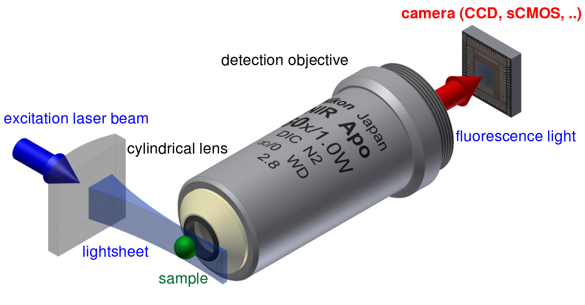

Streaming FFTs on Large 3D Microscope Images
Peter Steinbach
San Jose, March 20, 2015
Max Planck Institute of Molecular Cell Biology and Genetics
Disclaimer
This work is licensed under a
Creative Commons Attribution 4.0
International License.

All material contained in the slides are linked to their source if not produced by the author. If you find intellectual property is not attributed to your satisfaction, feel free to contact me.
For details on any of the following, consult the corresponding arxiv preprint :
Outline
- SPIM and the biological data deluge
- Multi-View Deconvolution
- From Model Systems to a Library
SPIM and the biological data
deluge
Selective Plane Illumination Microscopy
Live 3D Organism Development
The Deluge
| color depth (bit) |
stack shape | data volume (MB) |
|
|---|---|---|---|
| custom | 16 | 2048x2048x800 | 6.4 |
| propriatary | 16 | 1920x1920x436 | 3.1 |
- multiple angles (3-12), required by method
- multiple channels (different dyes)
- multiple timepoints (observe specimen over hours/days)
Multi-View Deconvolution
“Efficient Bayesian-based Multiview Deconvolution”
S. Preibisch, F. Amat, E. Stamataki, M. Sarov, R.H. Singer, E. Myers and P. Tomancak
Nature Methods (2014), 11(6):645-648.
Algorithm
stack_f32 running = stack_f32(const);
stack_f32 view[n_view], kernel1[n_view], //loaded from disk
kernel2[n_view], weights[n_view]; //loaded from disk
for( i : n_iterations){
for( v : n_view){
stack_f32 temp = running;
temp = convolve(temp,kernel1[v]); //FFT based
temp = view[v]/temp;
temp = convolve(temp,kernel2[v]); //FFT based
running = regularize(running, temp, weights);
}
}
- data type conversion from 16bit to 32bit
- time domain convolutions not feasible due to kernel size
From Model Systems to a Library
3D FFTs
stack_f32 temp(random);
for( i : n_iterations){
fft_3d_r2c(temp);
}
- CUDA 6.5
- gcc 4.8.1
- machine details
3D FFTs: CUDA API
- As expected, this is memory/transfer bound
- use async transfers
- use batched transforms
Convolutions
stack_f32 temp(random);
stack_f32 kernels[n_views];
batched_fft_r2c(kernels);
cudaMemCpyAsync(kernels[0]);
for( i : n_views){
convolve(temp,);
}

What about Managed Memory?
- don't worry about transfers anymore
- less code
- better maintenance
- large input data
- Nvidia Pascal generation will support GPU memory paging